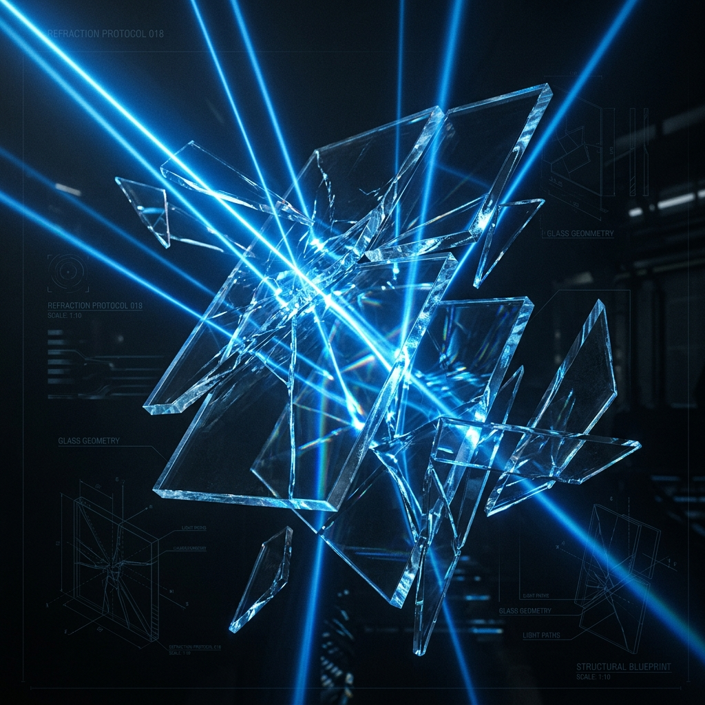
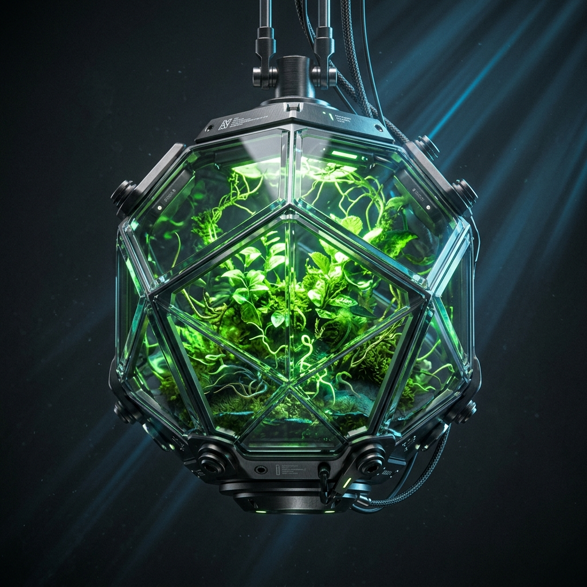
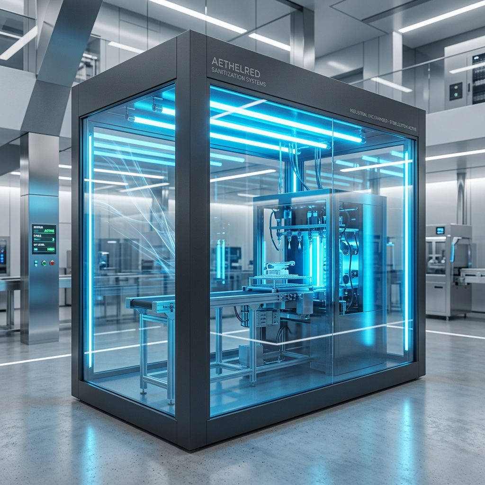

Ven2 Innovations
Engineering at Scale. We bridge the critical gap between academic inquiry and modular hardware reality.

Designed for Precision
We believe urban technology should be resilient, modular, and completely auditable. Ven² builds systems that optimize spatial layout, energy conservation, and micro-integration.
By implementing strict structural standards and open, data-driven auditing systems, we turn theoretical modular hardware designs into sustainable infrastructures.
Vision
To become the standard for precision-engineered, sustainable urban infrastructure.
Mission
Empowering the next generation of engineers to build deployable solutions through rapid prototyping and data-driven auditing.
What We Do
Ven² operates across three distinct modular engineering verticals, establishing a clean physical-to-digital bridge for urban environments.

Bio-Integrated Systems
Precision agricultural frameworks engineered for high-density urban environments. By combining vertical hardware structures with closed-loop biological metrics, we optimize crop resilience and water cycle loops.

Public Safety Tech
Intelligent, fully-audited sanitization and germicidal ecosystems. Utilizing precise wavelengths and hardware failsafes, we deploy clean, protective modules in public transit corridors.
Micro-Service Infrastructure
Rapid deployment systems of specialized IoT hardware. Hot-swappable sensor structures designed to snap into existing urban grids, facilitating frictionless field updates and continuous telemetry.
Audited R&D Performance
Every development cycle undergoes continuous verification to maintain strict compliance with industrial infrastructure requirements.
Built for Impact
Our team doesn't just design; we solve. We take pride in building hardware that is 'modular by design' and 'sustainable by default.' Every prototype we build is a step toward a cleaner, more efficient future.
At Ven², academic rigorousness coordinates directly with physical production. In our laboratory, ideas snap together as seamlessly as our physical modules. Toggle the custom modules in our interactive dashboard block to align the prototype.
Initialize Laboratory Integration
Join institutional stakeholders in reviewing audited field performance logs or schedule an operational site review at our facilities.